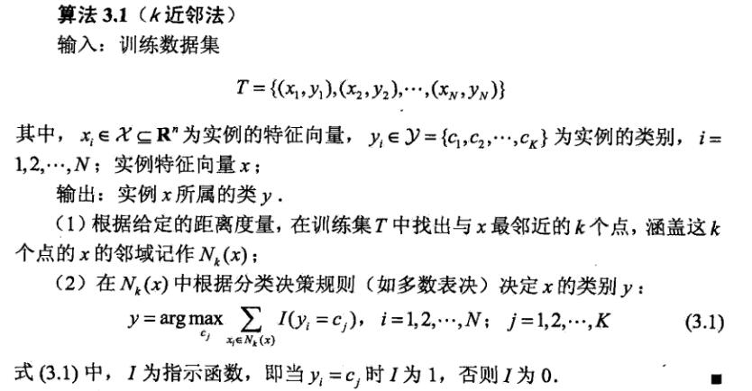
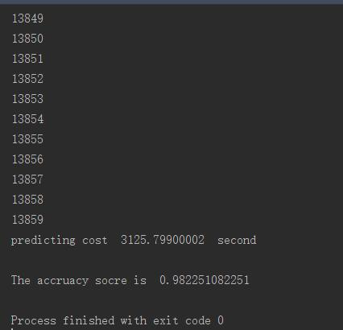

目录视图
目录视图 摘要视图
摘要视图 订阅
订阅版权声明：本文为博主原创文章，未经博主允许不得转载。
相关文章：
看了第三章 k近邻法 (k-nearest neighbor, k-NN) ， 发现KNN算法真的好适合在MNIST数据集上分类。
因为KNN实际上就是一个少数服从多数的投票模型，所以可以用在多分类的情况，而且算法也很简介，下面介绍一下KNN算法
k近邻算法
按照传统不详述该算法，具体内容可以看《统计学习方法》第三章。
这里只将书中算法贴出来

我的理解，KNN算法就是一种投票行为，这里举个例子：
有一堆选民，他们分别有黄种人、黑种人还有白种人（多分类）。
现在来了一个人，让大家投票将他归属到其中一种人种中。
选举方法是大家先根据待选人与自己的特征相似程度打分，再选择出分数最高的K个人，按照少数服从多数的原则决定待选人是什么人种。
这里假设K=3，打完分后选择出三个人，分别是两个黑种人，一个黄种人。
黄种人A说：“他头发是黑色的，所以他是黄种人”
黑种人B说：“他肤色是黑色的，所以他是黑种人”
黑种人C说：“他很高，所以他是黑种人”
这时根据少数服从多数的原则，待选人就被分类到黑种人。
这里可以看出，Knn是根据点与点之间的关系来进行判断，所以有些噪声（如黄种人A）可能会对结果有些影响。还有KNN并不需要训练，但需要遍历整个训练集，所以预测会比较慢。
书中提到过KD树来优化找最邻近点，但是并没有优化前K个最邻近点，因此我没打算实现该数据结构，书中关于KD树的描述已经比较清楚了，如果大家想看更多关于KNN加速的数据结构可以看看July_的博客
数据集介绍
数据集没什么可以说的，和感知器模型那个博文用的是同样的数据集。
但这次我们可以多分类，因此用原始训练数据即可
数据地址：https://github.com/WenDesi/lihang_book_algorithm/blob/master/data/train.csv
HOG特征提取
特征提取液没什么可以说的，和感知器模型那个博文用的是同样的HOG特征。
其实这里面无所谓什么特征，将整个图片作为特征也可以，因为knn算法真正浪费时间的是在循环着k最临近点那里，324维特征（图片HOG特征）和784维特征（图片28*28）差别不大。
代码
这里我选择k=10，即选择与当前点最邻近的10个点，从这10个点中投票选出当前点所属label。
这个K是我随便选的，也不想再重复测试选择最佳k值了（跑一次要将近半个小时啊啊！！！）
距离选择欧几里得距离
代码已放到Github上
#encoding=utf-8
import pandas as pd
import numpy as np
import cv2
import random
import time
from sklearn.cross_validation import train_test_split
from sklearn.metrics import accuracy_score
# 利用opencv获取图像hog特征
def get_hog_features(trainset):
features = []
hog = cv2.HOGDescriptor('../hog.xml')
for img in trainset:
img = np.reshape(img,(28,28))
cv_img = img.astype(np.uint8)
hog_feature = hog.compute(cv_img)
# hog_feature = np.transpose(hog_feature)
features.append(hog_feature)
features = np.array(features)
features = np.reshape(features,(-1,324))
return features
def Predict(testset,trainset,train_labels):
predict = []
count = 0
for test_vec in testset:
# 输出当前运行的测试用例坐标，用于测试
print count
count += 1
knn_list = [] # 当前k个最近邻居
max_index = -1 # 当前k个最近邻居中距离最远点的坐标
max_dist = 0 # 当前k个最近邻居中距离最远点的距离
# 先将前k个点放入k个最近邻居中，填充满knn_list
for i in range(k):
label = train_labels[i]
train_vec = trainset[i]
dist = np.linalg.norm(train_vec - test_vec) # 计算两个点的欧氏距离
knn_list.append((dist,label))
# 剩下的点
for i in range(k,len(train_labels)):
label = train_labels[i]
train_vec = trainset[i]
dist = np.linalg.norm(train_vec - test_vec) # 计算两个点的欧氏距离
# 寻找10个邻近点钟距离最远的点
if max_index < 0:
for j in range(k):
if max_dist < knn_list[j][0]:
max_index = j
max_dist = knn_list[max_index][0]
# 如果当前k个最近邻居中存在点距离比当前点距离远，则替换
if dist < max_dist:
knn_list[max_index] = (dist,label)
max_index = -1
max_dist = 0
# 统计选票
class_total = 10
class_count = [0 for i in range(class_total)]
for dist,label in knn_list:
class_count[label] += 1
# 找出最大选票
mmax = max(class_count)
# 找出最大选票标签
for i in range(class_total):
if mmax == class_count[i]:
predict.append(i)
break
return np.array(predict)
k = 10
if __name__ == '__main__':
print 'Start read data'
time_1 = time.time()
raw_data = pd.read_csv('../data/train.csv',header=0)
data = raw_data.values
imgs = data[0::,1::]
labels = data[::,0]
features = get_hog_features(imgs)
# 选取 2/3 数据作为训练集， 1/3 数据作为测试集
train_features, test_features, train_labels, test_labels = train_test_split(features, labels, test_size=0.33, random_state=23323)
# print train_features.shape
# print train_features.shape
time_2 = time.time()
print 'read data cost ',time_2 - time_1,' second','\n'
print 'Start training'
print 'knn do not need to train'
time_3 = time.time()
print 'training cost ',time_3 - time_2,' second','\n'
print 'Start predicting'
test_predict = Predict(test_features,train_features,train_labels)
time_4 = time.time()
print 'predicting cost ',time_4 - time_3,' second','\n'
score = accuracy_score(test_labels,test_predict)
print "The accruacy socre is ", score- 1
- 2
- 3
- 4
- 5
- 6
- 7
- 8
- 9
- 10
- 11
- 12
- 13
- 14
- 15
- 16
- 17
- 18
- 19
- 20
- 21
- 22
- 23
- 24
- 25
- 26
- 27
- 28
- 29
- 30
- 31
- 32
- 33
- 34
- 35
- 36
- 37
- 38
- 39
- 40
- 41
- 42
- 43
- 44
- 45
- 46
- 47
- 48
- 49
- 50
- 51
- 52
- 53
- 54
- 55
- 56
- 57
- 58
- 59
- 60
- 61
- 62
- 63
- 64
- 65
- 66
- 67
- 68
- 69
- 70
- 71
- 72
- 73
- 74
- 75
- 76
- 77
- 78
- 79
- 80
- 81
- 82
- 83
- 84
- 85
- 86
- 87
- 88
- 89
- 90
- 91
- 92
- 93
- 94
- 95
- 96
- 97
- 98
- 99
- 100
- 101
- 102
- 103
- 104
- 105
- 106
- 107
- 108
- 109
- 110
- 111
- 112
- 113
- 114
- 115
- 116
- 117
- 118
- 119
- 120
- 121
- 122
- 123
- 124
- 125
- 126
- 127

- 1
- 2
- 3
- 4
- 5
- 6
- 7
- 8
- 9
- 10
- 11
- 12
- 13
- 14
- 15
- 16
- 17
- 18
- 19
- 20
- 21
- 22
- 23
- 24
- 25
- 26
- 27
- 28
- 29
- 30
- 31
- 32
- 33
- 34
- 35
- 36
- 37
- 38
- 39
- 40
- 41
- 42
- 43
- 44
- 45
- 46
- 47
- 48
- 49
- 50
- 51
- 52
- 53
- 54
- 55
- 56
- 57
- 58
- 59
- 60
- 61
- 62
- 63
- 64
- 65
- 66
- 67
- 68
- 69
- 70
- 71
- 72
- 73
- 74
- 75
- 76
- 77
- 78
- 79
- 80
- 81
- 82
- 83
- 84
- 85
- 86
- 87
- 88
- 89
- 90
- 91
- 92
- 93
- 94
- 95
- 96
- 97
- 98
- 99
- 100
- 101
- 102
- 103
- 104
- 105
- 106
- 107
- 108
- 109
- 110
- 111
- 112
- 113
- 114
- 115
- 116
- 117
- 118
- 119
- 120
- 121
- 122
- 123
- 124
- 125
- 126
- 127
运行结果如下所示

- 顶
- 1
- 踩
- 0
- 猜你在找
- 深度学习基础与TensorFlow实践
- 【在线峰会】前端开发重点难点技术剖析与创新实践
- 【在线峰会】一天掌握物联网全栈开发之道
- 【在线峰会】如何高质高效的进行Android技术开发
- 机器学习40天精英计划
- Python数据挖掘与分析速成班
- 微信小程序开发实战
- JFinal极速开发企业实战
- 备战2017软考 系统集成项目管理工程师 学习套餐
- Python大型网络爬虫项目开发实战（全套）


暂无评论